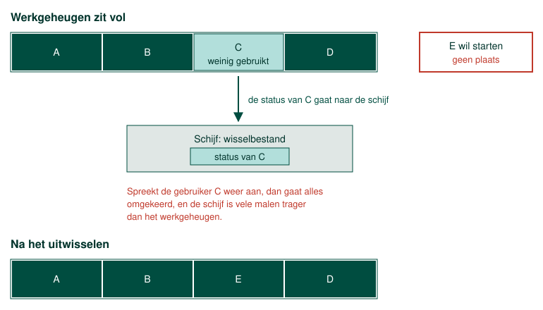

Zoals je weet zegt de Von Neumann architectuur dat een programma, om uitgevoerd te kunnen worden, in het werkgeheugen moet worden geladen.
Hoe meer programma's er worden uitgevoerd op een bepaald moment, hoe meer gegevens in het werkgeheugen worden geladen. Als een besturingssysteem performant wil zijn dan moet het ook opletten op welke adressen de data weggeschreven wordt naar het werkgeheugen.
Zo is het beter om gegevens die bij elkaar horen ook op aanliggende adressen te plaatsen in het werkgeheugen. Een reeks aaneensluitende adressen levert het geheugen namelijk sneller aan dan dezelfde hoeveelheid data die verspreid staat, en zo vermijdt het besturingssysteem meteen ook fragmentatie.
Wanneer we te maken hebben met grote programma's en bestanden kan het zijn dat het werkgeheugen helemaal vol is. In principe zouden er dan geen nieuwe bestanden meer kunnen worden geopend en geen programma's meer kunnen worden uitgevoerd. Gelukkig heeft men hierop een handige workaround gevonden.
Vanuit het standpunt van de gebruiker zijn er altijd slechts een paar programma's actief. De gebruiker kan namelijk slechts enkele taken tegelijkertijd uitvoeren. Het besturingssysteem gaat programma's die actief zijn maar niet vaak gebruikt worden uit het werkgeheugen halen en hun status opslaan op de harde schijf. Dit principe heet swapping.

Wat er daarna gebeurt is wat swapping duur maakt. Zodra de gebruiker dat programma weer aanspreekt, moet de opgeslagen status van de schijf terug naar het werkgeheugen, en daarvoor moet er eerst opnieuw plaats gemaakt worden, dus verhuist er iets anders naar de schijf. Een schijf is vele malen trager dan werkgeheugen, en tijdens zo'n wissel staat het programma dat erop wacht gewoon stil.
Windows houdt die weggeschreven gegevens bij in een wisselbestand op de systeemschijf. Linux doet hetzelfde, in een swapbestand of in een aparte swappartitie.
Voor wie een machine samenstelt is dat de reden waarom te weinig werkgeheugen zich niet meldt met een foutmelding maar met traagheid. De machine blijft gewoon werken, maar ze is voortdurend aan het wisselen, en dat merk je pas wanneer de installatie al draait. Werkgeheugen bijsteken is dan bijna altijd goedkoper dan die traagheid ergens anders proberen weg te werken.